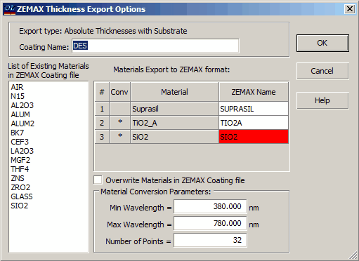

Export ZEMAX Coating description
Export ZEMAX Coating description
When exporting the ZEMAX coating description from OptiLayer, users have the flexibility to choose from four different ways of representing layer thicknesses: absolute thicknesses or relative thicknesses, each with the option of including or excluding a zero-thickness Substrate layer in the coating stack. Here is a breakdown of the thickness representation options available:
Absolute Thicknesses: This option allows users to export the thicknesses of the coating layers in physical units, providing a direct representation of the actual physical thicknesses used in the design.
Relative Thicknesses: With this option, users can export the optical thicknesses of the coating layers, which are normalized by the wavelength of light propagating through the layers. This representation is particularly useful for analyzing coatings in terms of their optical properties.
In terms of the inclusion of a substrate layer:
ZEMAX requires the inclusion of a substrate layer in the coating specification if the substrate is opaque. The selection of the corresponding export type ensures that the substrate layer is included accurately.
If the “With Substrate” option is chosen, OptiLayer automatically adds a zero-thickness layer with the refractive index corresponding to the substrate as the first layer in the coating stack. This aligns with the layer numbering convention in OptiLayer, where the substrate is considered the first layer.
Even if the substrate is transparent and the zero-thickness substrate layer is included by mistake, it does not impact the performance of the multilayer coating in ZEMAX, as the layer has zero thickness and represents the optical properties of the substrate.
By providing these options for representing layer thicknesses and seamlessly including or excluding the substrate layer in the export process, OptiLayer ensures accurate and flexible data transfer to ZEMAX software for comprehensive optical system design and analysis.
Note:
After selecting one of the thickness export options, the following dialog box will be displayed:

In this dialog, there is an option to specify a different Coating Name that will be assigned to the coating in the ZEMAX Coating file. This name must adhere to ZEMAX naming conventions, meaning that no spaces or special characters are permitted. At the bottom part of the dialog, a list of materials already existing in the ZEMAX file is provided for user convenience. In the middle section of the dialog, a material names substitution table is presented. OptiLayer suggests a name for each material used in the design that complies with ZEMAX naming conventions. Users have the option to manually change the name by typing in an alternative. Any material names that match those of already defined materials are highlighted in cells with a red background. The “Conv” column in the table indicates the required conversion state for each material:
A blank cell indicates that no conversion is necessary, and the material can be directly stored in ZEMAX format.
An asterisk (*) denotes that conversion to tabular form is required. For instance, this may be needed when the material is presented as a formula or composition. The conversion to tabular format can be done using the parameters specified at the bottom of the dialog, such as Min Wavelength, Max Wavelength, and Number of Points.
If the export operation encounters material names that are identical to those already present in the ZEMAX Coating file, an error message will be displayed, and the export process will fail. To prevent this issue, users can select the “Overwrite Materials in ZEMAX Coating File” option.
This robust process ensures that material names align with ZEMAX conventions and that any necessary conversions are performed accurately during the export operation, enabling a smooth transfer of coating information between OptiLayer and ZEMAX.
|
When considering overwriting already defined materials, it is crucial to exercise extreme caution as this action may impact the performance of other coatings that also utilize these materials. |
In the provided example, the materials have the following states:
TiO2_A: Exported with the name TIO2A, conversion is necessary
Suprasil: This material will be exported as SUPRASIL with no conversion required.
SiO2: Exported as SIO2 with conversion required. Additionally, a material with the same name is already defined in the ZEMAX Coating file. If the “Overwrite Materials in ZEMAX Coating file” option is not selected, a warning will be displayed during the export operation.
To proceed with the Coating Export procedure, click the “OK” button. This will initiate the export process, taking into account the necessary conversions and addressing any warnings related tomaterial names conflicts. By exercising caution and considering the implications of overwriting materials, users can ensure the integrity and optimal performance of coatings utilizing shared materials in the ZEMAX environment.